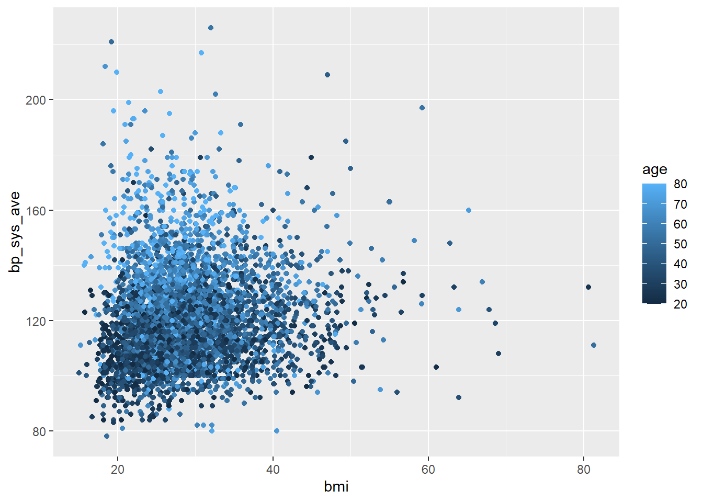

| diabetes | phys_active | max_bmi | min_bmi |
|---|---|---|---|
| No | No | 80.60 | 14.55 |
| No | Yes | 63.30 | 13.30 |
| No | NA | 38.73 | 12.88 |
| Yes | No | 81.25 | 15.86 |
| Yes | Yes | 56.50 | 20.60 |
| Yes | NA | 29.88 | 24.23 |
Reproducible document
Intro
This paper aim to describe learning r.
Methods and Results
The method focused on quantitative analysis.
Analysis
The analysis section included nothing
Table of resut
Table
nhanes_small %>%
filter(!is.na(diabetes)) %>%
group_by(diabetes, education) %>%
summarise(
mean_age = mean(age, na.rm = TRUE),
mean_bmi = mean(bmi, na.rm = TRUE)
) %>%
ungroup() %>%
# 2. Round the means to 1 digit and
# modify the `education` column so that male and female get capitalized.
mutate(
mean_age = round(mean_age, 1),
mean_bmi = round(mean_bmi, 1),
education = str_to_sentence(education)
) %>%
# 3. Rename `diabetes` to `"Diabetes Status"` and `education` to `Education`
rename(
"Diabetes Status" = diabetes,
"Education" = education,
"Mean Age" = mean_age,
"Mean BMI" = mean_bmi
) %>%
knitr::kable(caption = "Mean values of Age and BMI for each education and diabetes status.")`summarise()` has grouped output by 'diabetes'. You can override using the
`.groups` argument.| Diabetes Status | Education | Mean Age | Mean BMI |
|---|---|---|---|
| No | 8th grade | 51.8 | 28.8 |
| No | 9 - 11th grade | 46.3 | 28.6 |
| No | College grad | 46.0 | 27.3 |
| No | High school | 46.1 | 28.9 |
| No | Some college | 43.8 | 28.7 |
| No | NA | 10.1 | 20.5 |
| Yes | 8th grade | 63.0 | 32.0 |
| Yes | 9 - 11th grade | 61.4 | 33.1 |
| Yes | College grad | 60.6 | 31.3 |
| Yes | High school | 59.6 | 33.8 |
| Yes | Some college | 58.9 | 33.0 |
| Yes | NA | 16.7 | 26.1 |
Inserting images
[Cute covid cat] (images/cat.jpeg) {#fig-cat}
Visualizing data
One variable plots
ggplot(nhanes_small, aes(x = bmi)) +
geom_histogram(na.rm = TRUE)`stat_bin()` using `bins = 30`. Pick better value with `binwidth`.nhanes_small %>%
filter(bmi <= 60) %>%
ggplot(aes(x = bmi)) +
geom_histogram(na.rm = TRUE)`stat_bin()` using `bins = 30`. Pick better value with `binwidth`.See Figure 1
DIscrete variable
nhanes_small %>%
ggplot(aes(x = education)) +
geom_bar()nhanes_small %>%
filter(!is.na(diabetes)) %>%
ggplot(aes(x = diabetes)) +
geom_bar()
nhanes_small %>%
filter(!is.na(education)) %>%
ggplot(aes(x = education)) +
geom_bar()Plotting two variables
Plotting two continuous
nhanes_small %>%
ggplot(aes(x = bmi, y = bp_sys_ave)) +
geom_hex(na.ram = TRUE) +
geom_smooth(na.rm = TRUE)Warning in geom_hex(na.ram = TRUE): Ignoring unknown parameters: `na.ram`Warning: Removed 1513 rows containing non-finite values (`stat_binhex()`).`geom_smooth()` using method = 'gam' and formula = 'y ~ s(x, bs = "cs")'Two discrete variables
nhanes_small %>%
filter(!is.na(education), !is.na(diabetes))%>%
ggplot(aes(x = diabetes, fill = education)) +
geom_bar(position = position_dodge())Discreter and countinous variable
nhanes_small %>%
filter(!is.na(diabetes), bmi <= 60) %>%
ggplot(aes(x = diabetes, y = bmi)) +
geom_violin(na.rm = TRUE) +
geom_boxplot(na.rm = TRUE, width = 0.1)Exercise to make plots with one or two variables
library(NHANES)Warning: package 'NHANES' was built under R version 4.2.2nhanes_exercise <- NHANES %>%
rename_with(snakecase::to_snake_case) %>%
rename(sex = gender)# These are approximate caption titles
#| label: fig-distribution-ages
#| fig-cap: "Distribution of different age variables"
#| layout-ncol: 2
#| fig-subcap:
#| - "Age at collection"
#| - "Age of diabetes diagnosis"
# Distribution of age
ggplot(nhanes_exercise, aes(x = age)) +
geom_density(na.rm = TRUE)# Distribution of age at diabetes diagnosis
ggplot(nhanes_exercise, aes(x = diabetes_age)) +
geom_density(na.rm = TRUE)# Number of people who smoke now and are or above 20 years of age,
# removing those with missing smoking status.
nhanes_exercise %>%
filter(age >= 20, !is.na(smoke_now)) %>%
ggplot(aes(x = smoke_now)) +
geom_bar()
# BMI in relation to mean arterial pressure
nhanes_exercise %>%
mutate(mean_arterial_pressure = (bp_sys_ave + (2 * bp_dia_ave)) / 3) %>%
ggplot(aes(x = bmi, y = mean_arterial_pressure)) +
geom_hex(na.rm = TRUE) +
geom_smooth()`geom_smooth()` using method = 'gam' and formula = 'y ~ s(x, bs = "cs")'Warning: Removed 1513 rows containing non-finite values (`stat_smooth()`).THree or more variables
Q: I systolic blood pressure different in those with or without diabetes and dependent of education?
nhanes_small %>%
filter(!is.na(diabetes), !is.na(education)) %>%
ggplot(aes(x = education, y = bp_sys_ave, color = diabetes)) +
geom_boxplot(na.rm = TRUE)Q; How does BMI relate to systolic blood pressure and age
nhanes_small %>%
ggplot(aes(x = bmi, y = bp_sys_ave, color = age)) +
geom_point(na.rm =TRUE)Q:
nhanes_small %>%
ggplot(aes(x = bmi, y = bp_sys_ave, color = diabetes)) +
geom_point(na.rm =TRUE, alpha = 1) +
facet_grid(cols = vars(diabetes))Q:
nhanes_small %>%
filter(!is.na(diabetes), !is.na(education)) %>%
ggplot(aes(x = bmi, y =bp_sys_ave, color = age)) +
geom_point(na.rm = TRUE)
facet_grid(row = vars(diabetes), col = vars(education))<ggproto object: Class FacetGrid, Facet, gg>
compute_layout: function
draw_back: function
draw_front: function
draw_labels: function
draw_panels: function
finish_data: function
init_scales: function
map_data: function
params: list
setup_data: function
setup_params: function
shrink: TRUE
train_scales: function
vars: function
super: <ggproto object: Class FacetGrid, Facet, gg>scale and themes
base_plot <- nhanes_small %>%
filter(!is.na(diabetes), !is.na(education)) %>%
ggplot(aes(x = bmi, y = bp_sys_ave, color = age)) +
geom_point(na.rm = TRUE) +
facet_grid(rows = vars(diabetes),
cols = vars(education))
base_plot +
scale_color_viridis_c()